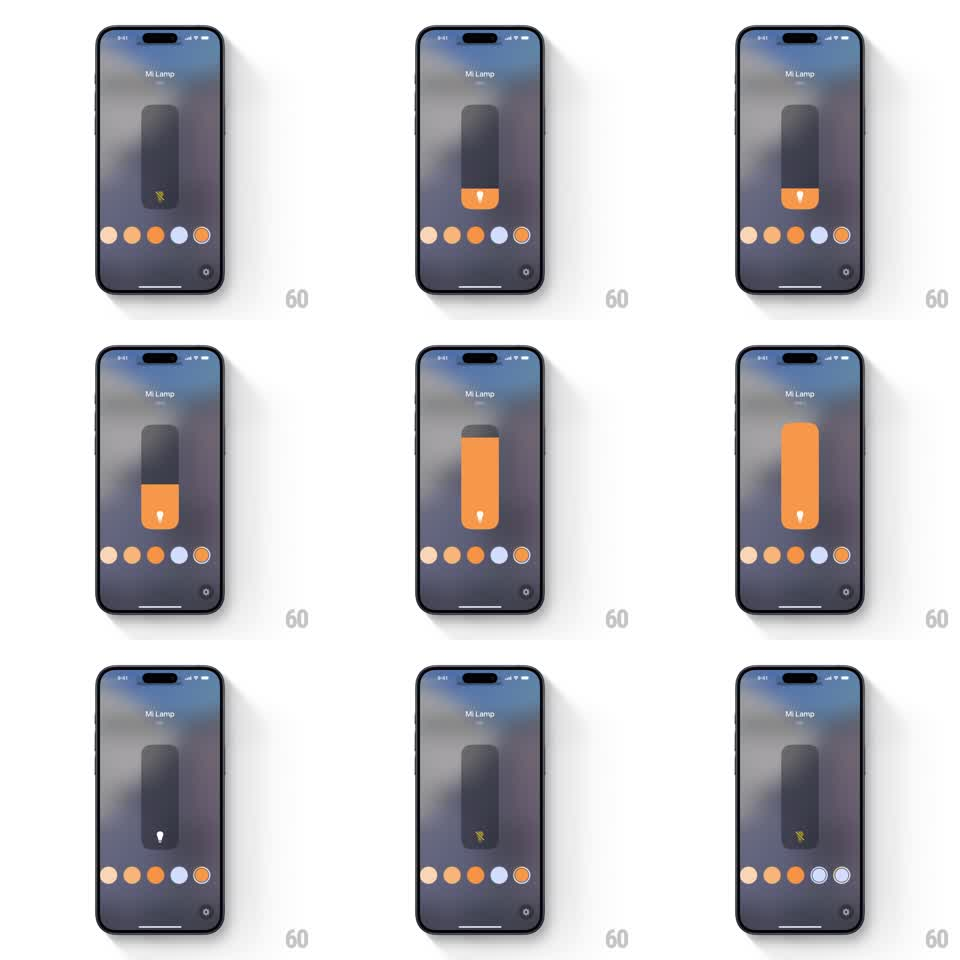

Media
Frame-by-frame

Rebuild this interaction 1:1: Apple Home's lamp control - a vertical capsule slider over a blurred room backdrop that stretches elastically as you drag brightness, with a color-dot row that sweeps the lamp's hue and an off state that empties the capsule.

Rebuild this interaction 1:1: Apple Home's lamp control - a vertical capsule slider over a blurred room backdrop that stretches elastically as you drag brightness, with a color-dot row that sweeps the lamp's hue and an off state that empties the capsule. ## Integration Integration: stack-agnostic spec - springs given as stiffness/damping, timed motions as duration + curve; map every value to your framework and animation library of choice. ## Scene Full-screen blurred room photo. "Mi Lamp" title and room name top center. Center: a tall rounded capsule - the slider. Its lower portion fills with the lamp's current color (amber/orange), capped by a small white bulb glyph; the unfilled portion stays dark translucent. Below: a row of color dots (ambers, white, orange). Off state: capsule empty, showing a gray crossed-bolt glyph. ## Motion spec Pattern: elastic fill slider with live color. - Dragging vertically fills the capsule from the bottom 1:1 with the finger; the fill's top edge stretches past the finger slightly and settles (spring stiffness ~250, damping ~18) - the elastic overshoot is the tactile signature. - The bulb glyph rides the fill's top edge and tilts a few degrees with drag velocity. - Tapping a color dot sweeps the fill's hue to the new color over 300ms (interpolating through the shortest hue path); the selected dot gets a ring highlight (150ms). - Dragging to zero (or tapping off) empties the capsule with a drain animation (fill height to 0, 250ms, ease-in) and swaps the glyph to the crossed bolt. - Turning on refills to the last level with the reverse spring. ## Calibration - The stretch must stay subtle: overshoot beyond ~8% of the capsule height reads as rubber, not glass. - Color changes animate the fill only - the backdrop blur stays constant. ## Reduced motion Fill tracks the finger without elastic overshoot; color changes are instant. ## Don't miss - The fill grows from the bottom of the capsule, and the glyph sits at the fill's surface, not the capsule's top. - The capsule is translucent when unfilled - the blurred room shows through it.